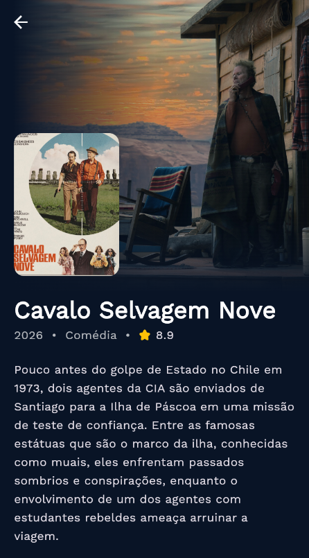
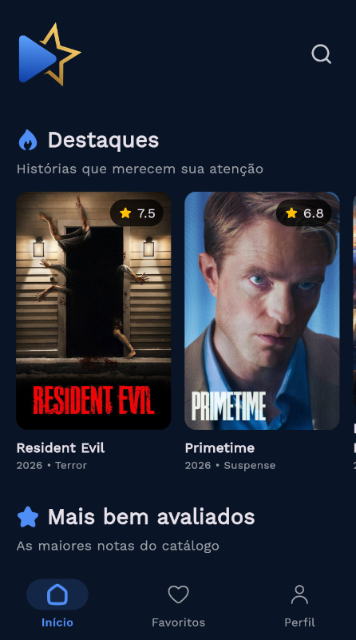

✦ 01
Saia do óbvio.
Encontre filmes em destaque e explore histórias que merecem a sua atenção.
Novas descobertas ↗
Menos tempo escolhendo.
Mais histórias que ficam com você.
Explore destaques, confira avaliações e guarde os filmes que você quer conhecer. Tudo no seu TvScore.


Da primeira curiosidade à sua lista de favoritos, o TvScore acompanha suas descobertas.
Encontre filmes em destaque e explore histórias que merecem a sua atenção.
Confira notas, gêneros e sinopses para encontrar a história que combina com seu momento.
Reúna seus títulos favoritos para lembrar das histórias que despertaram seu interesse.
Uma interface que deixa as histórias no centro de tudo. Conheça o app por dentro.
Clique em uma tela para ver de perto ↗
Uma experiência direta, da entrada no app à descoberta de uma nova história.
Conhecer o TvScore ↗Crie sua conta ou entre no TvScore para começar.
Explore os destaques, veja os mais bem avaliados e conheça os detalhes de cada filme.
Confira a sinopse e salve nos favoritos os títulos que conquistaram seu interesse.
É um aplicativo para descobrir filmes, consultar avaliações e sinopses e reunir seus favoritos em um só lugar.
Explore filmes em destaque e títulos mais bem avaliados. Cada filme traz informações para ajudar na sua escolha.
Sim. O TvScore tem uma área de favoritos para reunir os títulos que você quer guardar.
O link oficial de download será disponibilizado aqui em breve. Enquanto isso, conheça as telas e os recursos do aplicativo.
Descubra. Escolha. Favorite. Do seu jeito, no TvScore.
Link de download em breve.